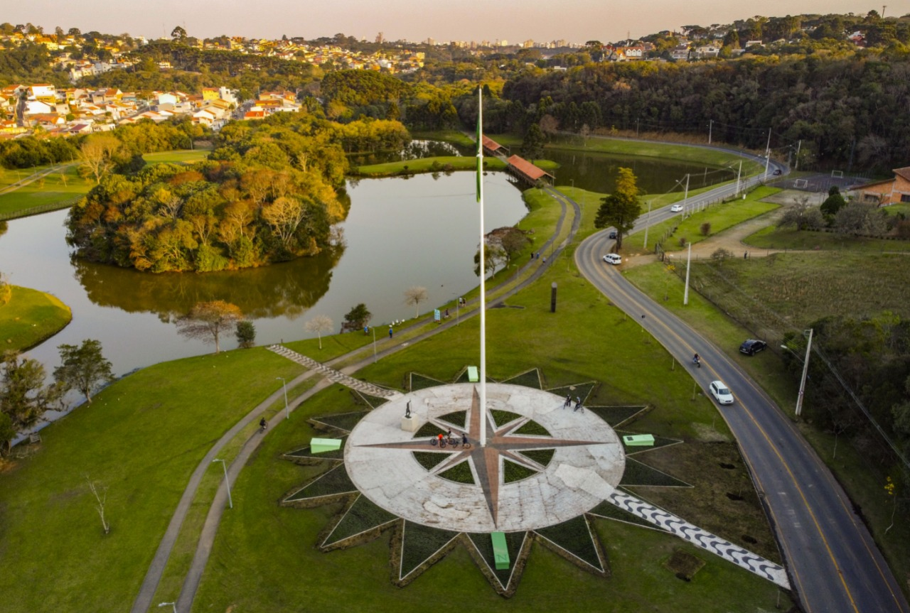

Projeto Vamos Pedalar - Parque Tingui
O projeto tem como finalidade proporcionar uma oportunidade de ciclistas da região se encontrarem em locais do Parque Tingui para pedalarem juntos e apoiando uns aos outros. A ideia surgiu com um colega que tinha preguiça de fazer exercícios por desmotivação e, descobrindo que pedalar junto de outras pessoas é melhor, decidiu reunir um grupo para andar de bike. Hoje, a equipe conta com mais de 200 pessoas em diferentes horários, idades e locais de encontro no parque.